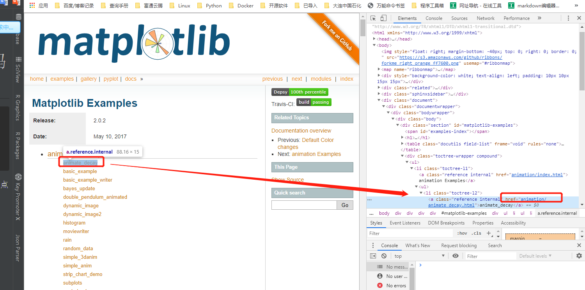
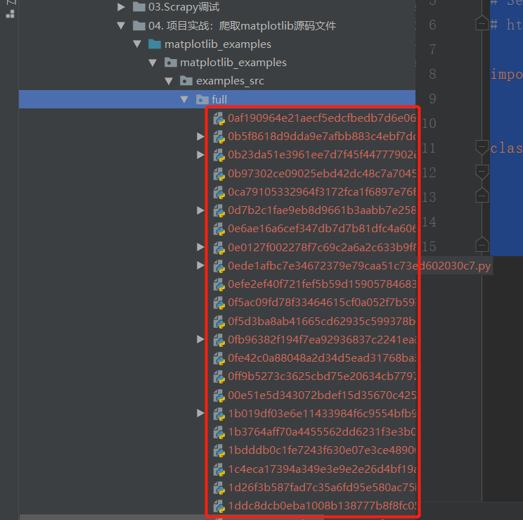
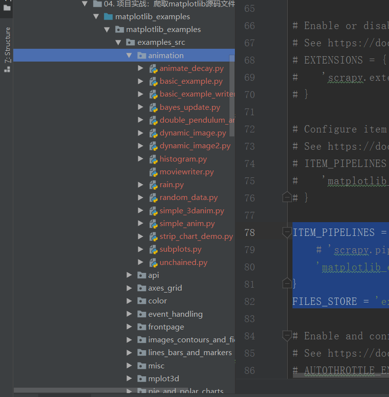

Contents
22.3.5. 项目实战：爬取matplotlib源码文件¶
爬取网址：https://matplotlib.org/examples/
爬取信息：爬取所有例子源码
爬取方式：scrapy框架
存储方式：FilesPipeline
matplotlib是著名的python绘图库，通过例子列表进入页面阅读代码，点击‘source code’按钮即可下载源码文件。
1.用scrapy shell 分析页面：
scrapy shell https://matplotlib.org/examples/index.html
view(response)


- 获取了每个例子的详情链接
In [8]: link = response.xpath('//div[@class="toctree-wrapper compound"]/ul/li/ul/li/a/@href')
In [9]: len(link)
Out[9]: 506
In [10]: link.extract_first()
Out[10]: 'animation/animate_decay.html'
In [2]: from scrapy.linkextractors import LinkExtractor
In [3]: le = LinkExtractor(restrict_xpaths='//li[@class="toctree-l2"]/a')
In [4]: link = le.extract_links(response)
In [5]: link
Out[5]:
[Link(url='https://matplotlib.org/examples/animation/animate_decay.html', text='animate_decay', fragment='', nofollow=False),
Link(url='https://matplotlib.org/examples/animation/basic_example.html', text='basic_example', fragment='', nofollow=False),
In [7]: link[0].url
Out[7]: 'https://matplotlib.org/examples/animation/animate_decay.html'
- -获取例子详情中source code的下载链接。
In [29]: fetch('https://matplotlib.org/examples/animation/animate_decay.html')
2019-08-02 15:28:11 [scrapy.core.downloader.tls] WARNING: Remote certificate is not valid for hostname "matplotlib.org"; 'ssl391862.cloudflaressl.com'!='matplotlib.org'
2019-08-02 15:28:12 [scrapy.core.engine] DEBUG: Crawled (200) <GET https://matplotlib.org/examples/animation/animate_decay.html> (referer: None)
In [30]: view(response)
Out[30]: True
In [31]: le = LinkExtractor(restrict_xpaths='//div[@class="section"]/p[1]/a')
In [32]: s_link = le.extract_links(response)
In [33]: s_link
Out[33]: [Link(url='https://matplotlib.org/examples/animation/animate_decay.py', text='source code', fragment='', nofollow=False)]
In [35]: s_link[0].url
Out[35]: 'https://matplotlib.org/examples/animation/animate_decay.py'
css 选择详细链接方式如下：
fetch('https://matplotlib.org/examples/index.html')
In [34]: le = LinkExtractor(restrict_css='#matplotlib-examples > div > ul > li > ul > li > a')
In [35]: links = le.extract_links(response)
In [40]: [ link.url for link in links ]
['https://matplotlib.org/examples/animation/animate_decay.html',
'https://matplotlib.org/examples/animation/basic_example.html',
'https://matplotlib.org/examples/animation/basic_example_writer.html',
'https://matplotlib.org/examples/animation/bayes_update.html',
'https://matplotlib.org/examples/animation/double_pendulum_anim
css 获取详下载链接面的方式:
fetch('https://matplotlib.org/examples/animation/animate_decay.html')
In [49]: le = LinkExtractor(restrict_css='#animation-example-code-animate-decay-py > p:nth-child(3) > a')
In [50]: link_urls = le.extract_links(response)
In [51]: [url.url for url in link_urls]
Out[51]: ['https://matplotlib.org/examples/animation/animate_decay.py']
2.实现代码：
1)创建matplotlib项目，并根据genspider创建spider。
2)配置FilesPipeline，并指定下载目录。
3)实现Item
4)实现spider文件
步骤01首先创建Scrapy项目,取名为matplotlib_examples，再使用scrapy genspider命令创建Spider
$ scrapy startproject matplotlib_examples
$ cd matplotlib_examples
$ scrapy genspider examples matplotlib.org
- 在settings.py中进行设置，并制定下载目录：
USER_AGENT = 'Mozilla/5.0 (Windows NT 10.0; Win64; x64) AppleWebKit/537.36 (KHTML, like Gecko) Chrome/75.0.3770.142 Safari/537.36'
DOWNLOAD_DELAY = 0.01
### 存储格式，可选项
#json格式存储
# FEED_URI = 'examples_src.json'
# FEEED_FORMAT = "json" # 存入json文件
# FEED_EXPORT_ENCODING = "utf-8" #设置中文编
# Obey robots.txt rules
ROBOTSTXT_OBEY = False
ITEM_PIPELINES = {
'scrapy.pipelines.files.FilesPipeline': 1,
}
FILES_STORE = 'examples_src
- 在item.py添加file_urls和files两个字段。
# -*- coding: utf-8 -*-
# Define here the models for your scraped items
#
# See documentation in:
# https://docs.scrapy.org/en/latest/topics/items.html
import scrapy
class MatplotlibDownloadItem(scrapy.Item):
file_urls = scrapy.Field()
files = scrapy.Field()
- 实现:raw-latex:spiders.py文件
# -*- coding: utf-8 -*-
import scrapy
from scrapy.linkextractors import LinkExtractor
from matplotlib_examples.items import MatplotlibDownloadItem
class MatplotSpider(scrapy.Spider):
name = 'matplot'
allowed_domains = ['matplotlib.org']
start_urls = ['https://matplotlib.org/examples/index.html']
def parse(self, response):
le = LinkExtractor(restrict_xpaths='//li[@class="toctree-l2"]/a')
detail_links = le.extract_links(response)
for detail_link in detail_links:
yield scrapy.Request(detail_link.url, callback=self.parse_url)
def parse_url(self, response):
item = MatplotlibDownloadItem()
le2 = LinkExtractor(restrict_xpaths='//div[@class="section"]/p[1]/a')
download_link = le2.extract_links(response)[0].url
item['file_urls'] = [download_link]
yield item
# # 导入CrawlerProcess类
# from scrapy.crawler import CrawlerProcess
#
# # 获取项目的设置信息
# from scrapy.utils.project import get_project_settings
#
# if __name__ == '__main__':
# # 创建CrawlerProcess类对象，并将获取的设置信息传入
# process = CrawlerProcess(get_project_settings())
# # 设置需要启动的爬虫名称
# process.crawl('matplot')
# # 启动爬虫
# process.start()
- 运行代码:
scrapy crawl matplot -o matplot.json
或者 创建main.py文件。
#!/usr/bin/env python
#-*- coding:utf8 -*-
# auther; 18793
# Date：2019/8/2 17:10
# filename: main.py
from scrapy import cmdline
cmdline.execute("scrapy crawl matplot -o examples.json".split())

下载的文件目录被安置在：source_download/full目录下，
而且文件名字是长度相等的奇怪数字，这些数字是下载文件urlde sha1散列值，
虽然这样能避免名字重复，但是文件名不直观，很难对应文件内容，所以需要重新写一个脚本， 依据matplot.json文件中的信息进行重命名。
下面生成FilesPipeline的子类，对file_path方法中的命名规则进行重写。以具体文件为例：
https://matplotlib.org/examples/animation/animate_decay.py
animation为类别，
animate_decay.py为文件名，
animation/animate_decay.py为文件路径。
在pipelines.py中添加代码如下：
from scrapy.pipelines.files import FilesPipeline
import os
class MyFilesPipeline(FilesPipeline):
def file_path(self, request, response=None, info=None):
folder = request.url.split('/')[-2]
filename = request.url.split('/')[-1]
return os.path.join(folder,filename)
在settings.py中添加代码如下：
ITEM_PIPELINES = {
# 'scrapy.pipelines.files.FilesPipeline': 1,
'matplotlib_examples.pipelines.MyFilesPipeline': 1,
}
FILES_STORE = 'examples_src'
结果如下： 